Martin Cubaud
LASTIG-UGE-IGN/Géodata Paris
2025-2026
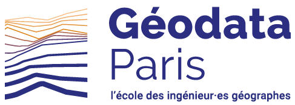
Ce cours est construit à partir du cours M2 IGAST 2022 d'Ana-Maria Olteanu-Raimond.
Analyse multivariée = les données sont multidimensionnelles.
| gid | nom | Code insee | Alt_moy | Pente_moy | De_relig | ... |
|---|---|---|---|---|---|---|
| 1 | RENCUREL | 38333 | 1114 | 74 | 0,02893089 | |
| 2 | MALLEVAL-EN-VERCORS | 38216 | 1114 | 74 | 0,07057872 | |
| 3 | MURIANETTE | 38271 | 1027 | 73 | 0 | |
| 4 | CHAMP-SUR-DRAC | 38071 | 215 | 2 | 0,4742854 | |
| 5 | JARRIE | 38200 | 385$X_{ij}$ | 46 | 0,22279623 | |
| 6 | AUTRANS | 38021 | 1305 | 42 | 0,02277919 | |
| 7 | MONTCHABOUD | 38252 | 518 | 71 | 0,50559645 | |
| 8 | PONT-EN-ROYANS | 38319 | 409 | 43 | 0 |
Quelles sont les communes qui se ressemblent ? Quelles sont les variables qui permettent d'identifier les ressemblances / dissemblances ?
A chaque individu (unité spatiale), on associe son vecteur $X_i$, contenant la $i^{ème}$ ligne :
$X_i = (X_{i,1} ... X_{i,M})$
A chaque variable, on associe son vecteur $V_j$, contenant la $j^{ème}$ colonne :
$V_j = \begin{pmatrix}X_{1,j}\\...\\X_{N,j}\end{pmatrix} \rightarrow$ Moyenne, écart-type, variance
Pas une distance géographique, mais une distance prenant en compte les valeurs des variables.
Deux individus sont proches dans "l'espace des distances" si la distance est faible.
Il existe plusieurs distances : euclidienne, Manhattan...
⚠ Normaliser les variables avant de calculer une distance !
⚠ Variables qualitatives : Encodage, distances sur les hierarchies...
Distance euclidienne
$d(i_1,i_2)=\sqrt{\sum_{j=1}^M(X_{i_1,j} - X_{i_2, j})^2}$
Distance euclidienne au carré : Permet de renforcer l’effet des distances entre les objets éloignés (atypiques)
Distance de Manhattan
$d_M(i_1,i_2)=\sum_{j=1}^M|X_{i_1,j} - X_{i_2, j}|$
"Distance" cosinus : ignore la magnitude, plus stable en haute dimension
$d_{cos}(i_1, i_2)=1 - \frac{\sum_{j=1}^M X_{i_1,j} X_{i_2, j}}{\sqrt{\sum_{j=1}^M X_{i_1,j}^2} \sqrt{\sum_{j=1}^M X_{i_2,j}^2}}$
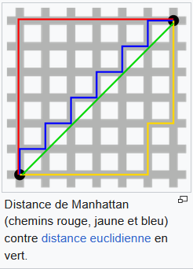
(wikipedia)
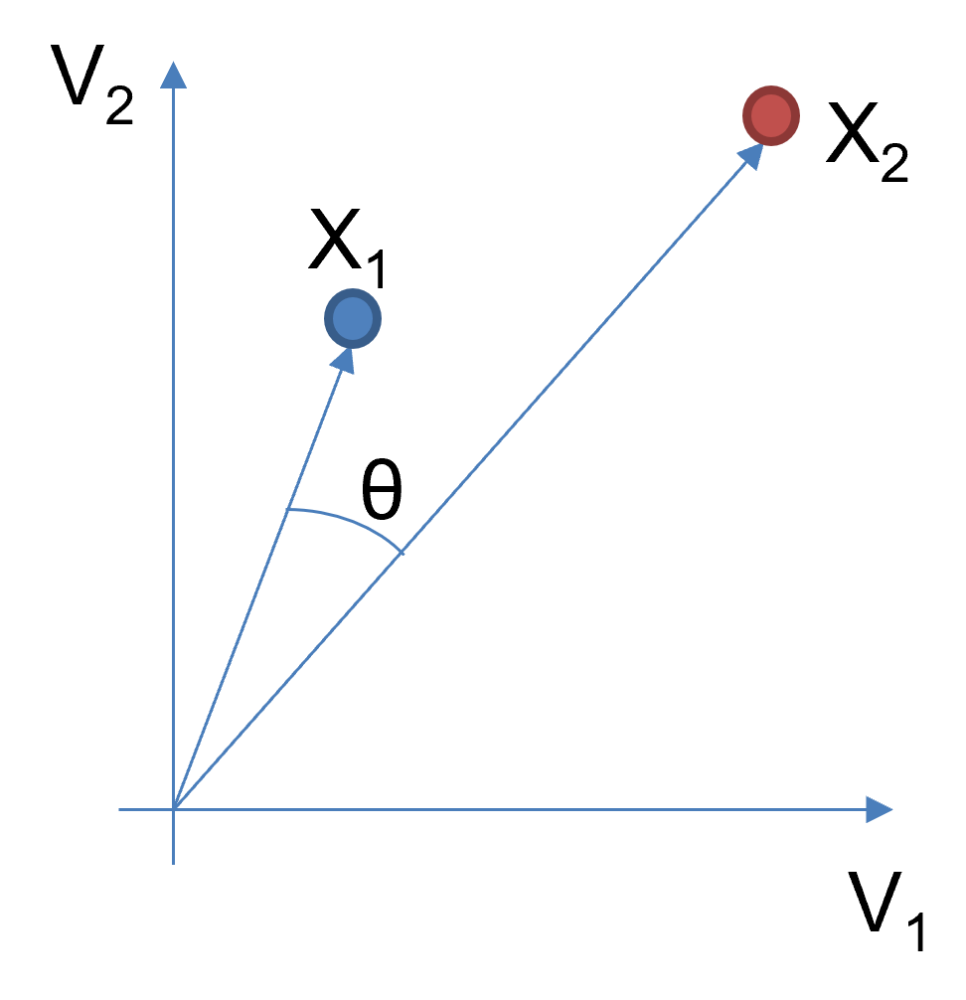
E.g. pour 2 variables $x$ et $y$, en notant $\Delta x = x_2 - x_1$ et $\Delta y = y_2 - y_1$ :
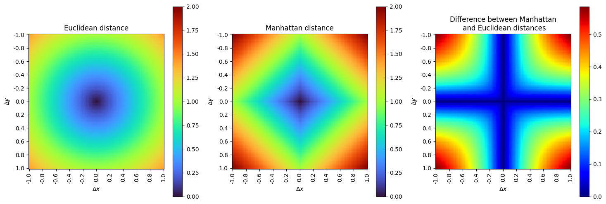
Centrer permet de mettre l'origine du système d'axes au centre de gravité du nuage de points; $G$ = vecteur des moyennes arithmétiques de chaque variable.
$G = \begin{pmatrix}\bar{V_{1}}\\...\\\bar{V_{M}}\end{pmatrix}, \bar{V_j}=\frac{1}{N}\sum_{i=1}^N X_{i,j}$
Matrice centrée :
$X_c = \begin{pmatrix} X_{1,1} - \bar{V_{1}} &... &X_{1,M} - \bar{V_{M}}\\ \vdots &\ddots& \vdots \\ X_{N,1} - \bar{V_{1}} &... &X_{N,M} - \bar{V_{M}}\end{pmatrix}$
Réduire permet de rendre comparables les variables exprimées sur des échelles (unités) différentes.
écart-type $\sigma_j = \sqrt{ \frac{1}{N} \sum_{i=1}^N (X_{i,j} - \bar{V_j})^2 }$
Matrice centrée réduite :
$X_{cr} = \begin{pmatrix} \frac{X_{1,1} - \bar{V_{1}}}{\sigma_1} &... & \frac{X_{1,M} - \bar{V_{M}}}{\sigma_M}\\ \vdots &\ddots& \vdots \\ \frac{X_{N,1} - \bar{V_{1}}}{\sigma_1} &... &\frac{X_{N,M} - \bar{V_{M}}}{\sigma_M}\end{pmatrix}$
Objectifs de l'ACP :
On a 2 variables X et Y assez corrélées.
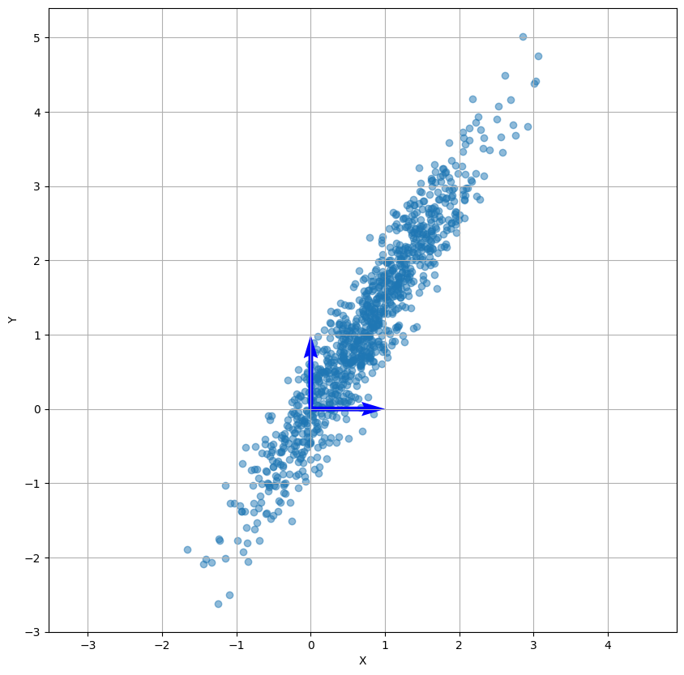
On veut résumer l'information en une seule variable.
Etape 1 : centrer-réduire
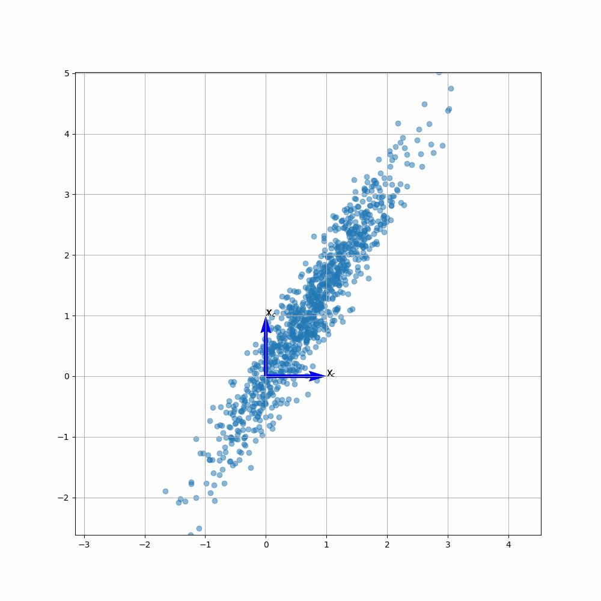
$X_{cr} = \frac{X - \bar{X}}{\sigma_X}, Y_{cr} = \frac{Y - \bar{Y}}{\sigma_Y}$
Etape 2 : calcul de la matrice de corrélation
Matrice de la corrélation entre chaque paire de variable. Si on a M variables, la matrice est de taille M$\times$M.
$cor(X, Y)=cov(X_{cr}, Y_{cr})=\frac{1}{N}\sum_{i=1}^N X_{cr_i}Y_{cr_i}$
$COR = \begin{pmatrix} cor(X, X) & cor(X, Y) \\ cor(Y, X) & cor(Y, Y) \end{pmatrix} = \begin{pmatrix} 1 & 0.89 \\ 0.89 & 1 \end{pmatrix}$
Etape 3 : chercher les directions de plus grande variance = Les vecteurs propres.
On cherche ces directions comme combinaisons linaires des anciennes variables.
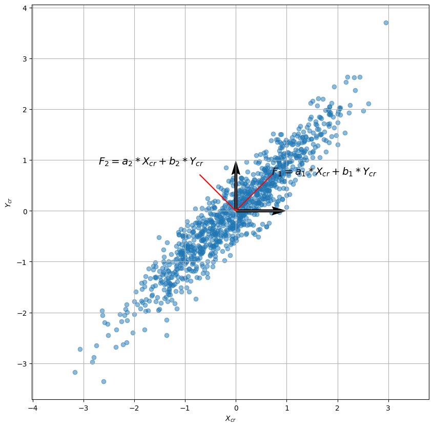
On cherche $F_1 = a X_{cr} + b Y_{cr}$ qui maximise $var(F_1)$. (Avec $a^2+b^2=1$)
$var(F_1)=var(a X_{cr} + b Y_{cr}) = a^2 var(X_cr) + b^2 var(Y_cr) + 2ab Cov(X_cr, Y_cr)$
$var(F_1)=\begin{pmatrix} a & b \end{pmatrix} COR \begin{pmatrix} a \\ b \end{pmatrix} \rightarrow$ Maximal si $ COR \begin{pmatrix} a \\ b \end{pmatrix}$ est dans la même direction que $\begin{pmatrix} a \\ b \end{pmatrix}.$
Les vecteurs propres $\vec{v_1},...,\vec{v_M}$ sont des vecteurs unitaires tels que $COR\vec{v_j} = \lambda_j\vec{v_j}$
Les $\lambda_j$ sont appelés les valeurs propres. $\lambda_j$ est la variance expliquée par le vecteur propre j.
$\rightarrow$ Calculer les valeurs propres : solutions $\lambda$ de $DET(COR - \lambda Id) = 0$.
$\rightarrow$ Calculer le vecteur propre associé à $\lambda_j$ : solution $\vec{v}$ de $(COR - \lambda_j Id)\vec{v} = \vec{0}$.
Etape 4 : Construire les nouvelles variables = les composantes principales en projetant selon les vecteurs propres.
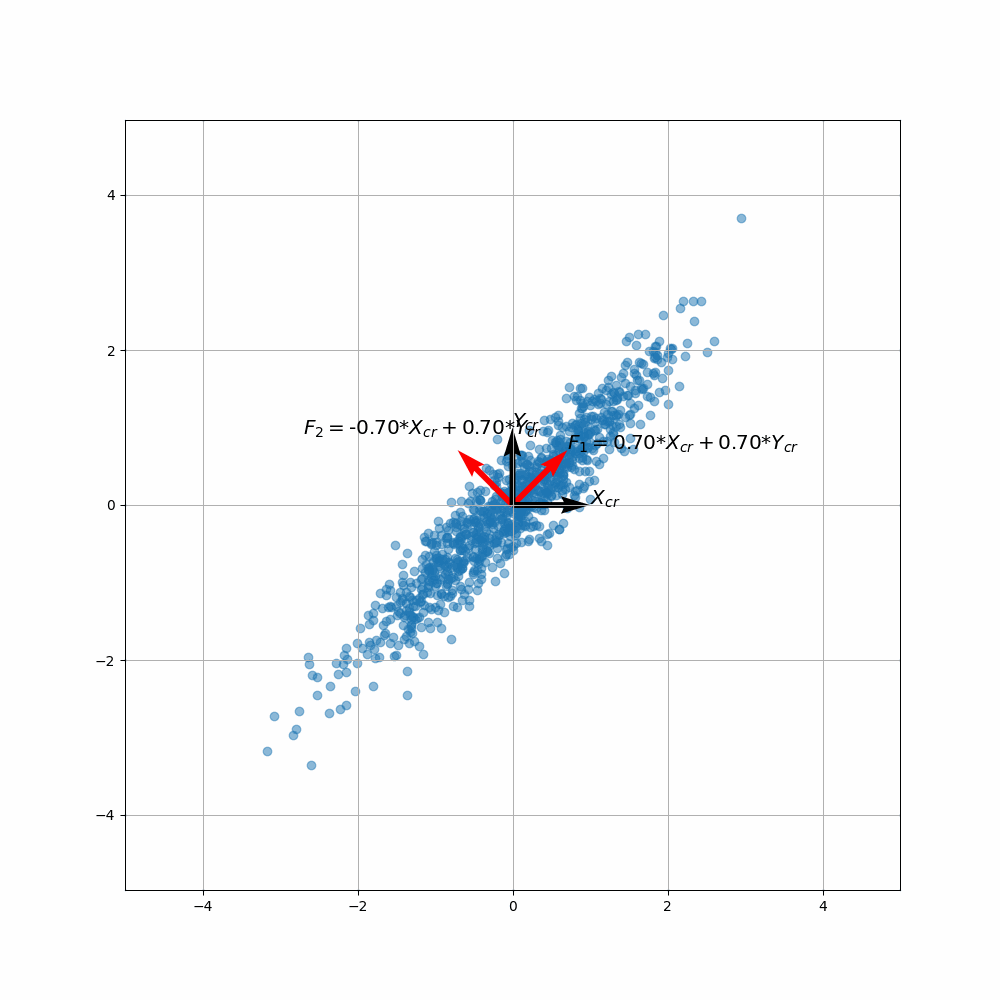
Etape 5 : Réduction du nombre de dimensions.
Basée sur la notion de taux d'inertie : le % d'information porté par chaque axe factoriel.
$TI_j = \frac{\lambda_j}{\sum_{i=0}^M\lambda_i}$
Choix du nombre de dimensions en fonction de l'inertie souhaitée :
En python : classe sklearn.decomposition.PCA.
Signification : permet 1) de trouver une signification à chaque composante, 2) de montrer que les composantes séparent les variables en paquets, 3) d'identifier la relation entre les variables
Trois types d'informations peuvent être représentés :
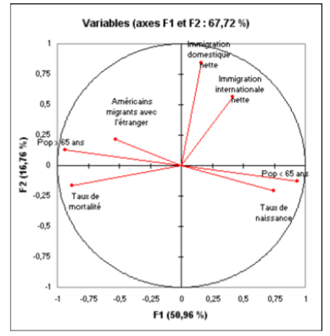
Les axes principaux : $F_1$ et $F_2$
Représentation des variables : Chaque variable $V$ est représenté par un point de cordonnées $(cor(V, F1); cor(V, F2))$
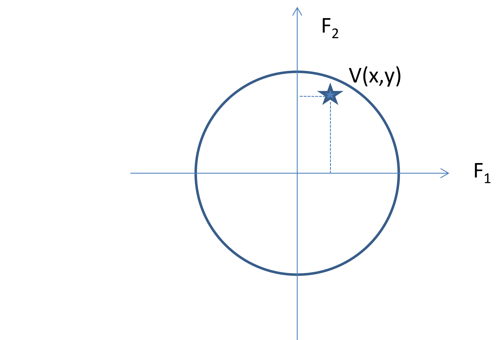
Coordonnées factorielles des variables
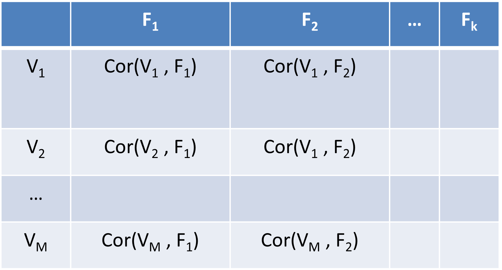
Pour chaque variable, on évalue la corrélation entre la variable dans son espace original (centré-réduit) et son nouvel espace
Variables proches du bord du cercle : signifie que la variable est bien corrélée avec un des deux facteurs constituant ce plan $\rightarrow$ variables sont bien représentées par le plan factoriel
Variables proches de 0 : signifie que la variable n’est pas bien corrélée avec un des deux facteurs $\rightarrow$ variables sont mal représentées par le plan factoriel
$r(V_1, V_2) = cos(angle(V_1, V_2))$
Angle proche de 0° : $cos(angle)=r(V_1, V_2)=1$
$\rightarrow V_1$ et $V_2$ sont fortement corrélés positivement.
Angle proche de 90° : $cos(angle)=r(V_1, V_2)=0$
$\rightarrow$ manque de corrélation entre $V_1$ et $V_2$.
Angle proche de 180° : $cos(angle)=r(V_1, V_2)=-1$
$\rightarrow V_1$ et $V_2$ sont fortement corrélés négativement.
$\rightarrow$Identifiez les variables corrélés positivement, négativement, et celles non corrélées.
Les coordonnées factorielle de l'US i pour la composante k :
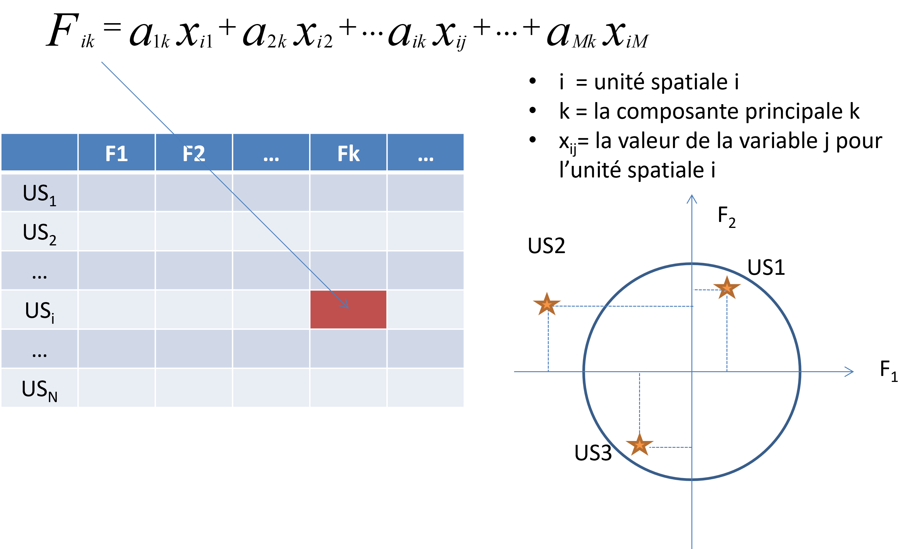
ACP appliquée sur un jeu de données caractérisé par :
Interprétation des coordonnées factorielles des variables
| Corrélation avec $F_1$ | |
|---|---|
| Esp vie F | 0.86 |
| Pnb/hab | 0.81 |
| % santé | 0.78 |
| Activ F | 0.17 |
| % éducation | 0.10 |
| % chom | -0.62 |
| mort inf | -0.90 |
La première composante principale oppose :
Interprétation des coordonnées factorielles des individus
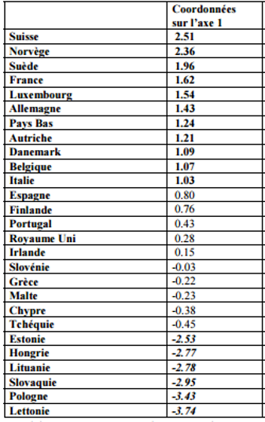
S'opposent des pays :
Objectif : Regrouper dans des classes les US qui se ressemblent, c-à-d qui possèdent des caractéristiques communes.
Deux grandes familles de méthodes de classification :
Principe : définir des classes homogènes tout en favorisant l’hétérogénéité entre les classes.
Minimiser la distance entre deux US d’une même classe et maximiser la distance entre deux US de classes différentes.
Étapes
- Représenter les variables et étudier leurs corrélations.
- Données brutes, données transformées, composantes factorielles
- Généralement la distance euclidienne
- Distance de Manhattan
- Distance euclidienne au carré : renforce l'influence des individus "éloignés"
On choisit en général l'inertie.
Si l'ensemble des US est regroupé en Q classes :
Inertie totale = inertie intra-classe + inertie inter-classe
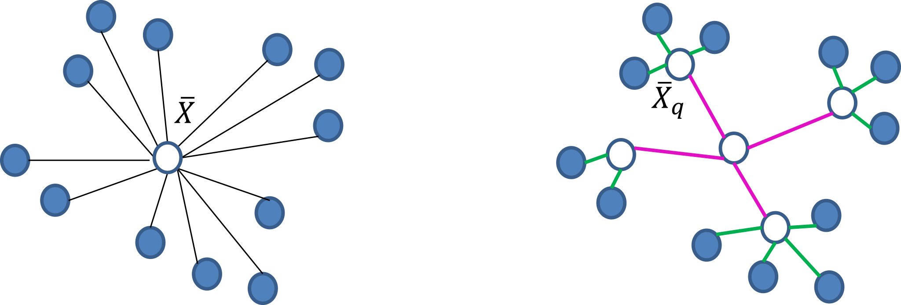
Une classe est homogène si son inertie est faible.
Si l'ensemble des US est regroupé en Q classes :
Inertie totale = inertie intra-classe + inertie inter-classe
$\sum\limits_{i=1}^N d(X_i, \bar{X})^2 = \sum\limits_{q=1}^Q \sum_{X_i \in q} d(X_i, \bar{X_q})^2 + \sum\limits_{q=1}^Q n_q d(\bar{X_q}, \bar{X})^2$
avec $d(a, b)$ la distance entre $a$ et $b$, $\bar{X}$ la moyenne de $X$, $\bar{X_q}$ la moyenne des individus de la classe q.
Une classe est homogène si son inertie est faible.
Une partition est dite de bonne qualité si :
La qualité d'une partition est mesurée par :
Q = Inertie inter classe / inertie totaleLa qualité d'une partition est mesurée par :
Q = Inertie inter classe / inertie totaleQ doit être le plus proche de 1 sans avoir un nombre de classes élevé
$\rightarrow$s'arrêter après un dernier saut important
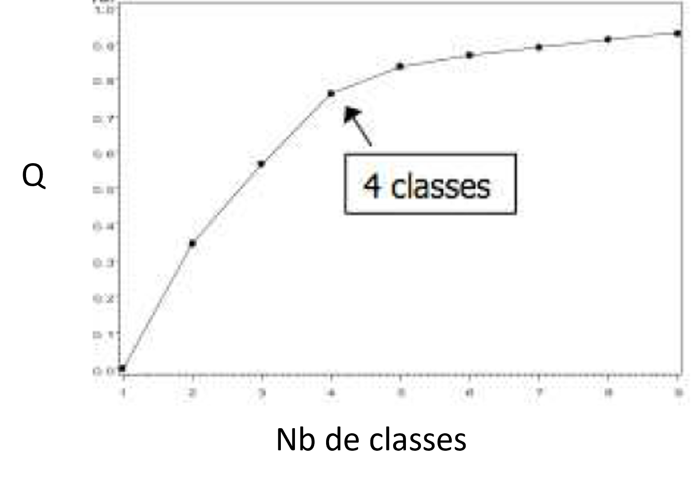
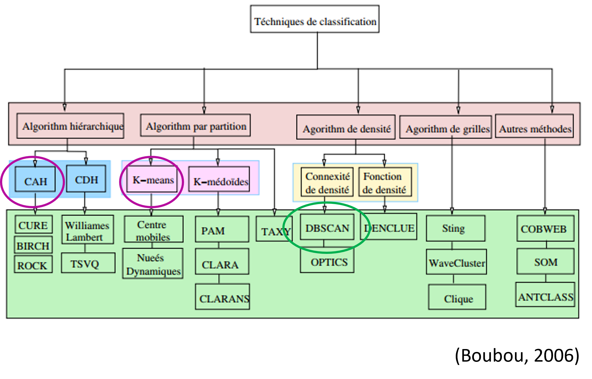
Objectif :Définir un arbre hierarchique (dendrogramme) permettant :
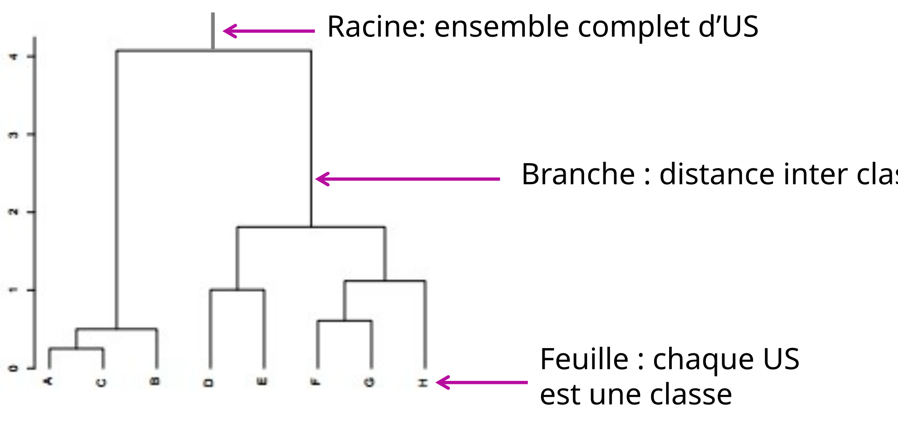
Objectif :Définir un arbre hierarchique (dendrogramme) permettant :
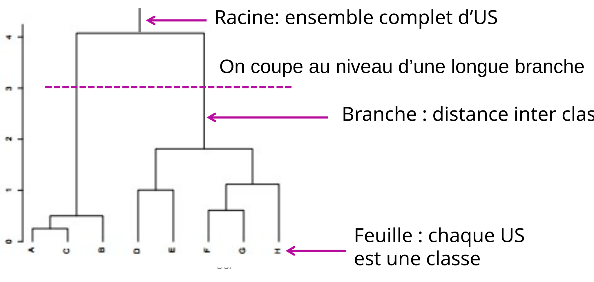
Objectif :Définir un arbre hierarchique (dendrogramme) permettant :
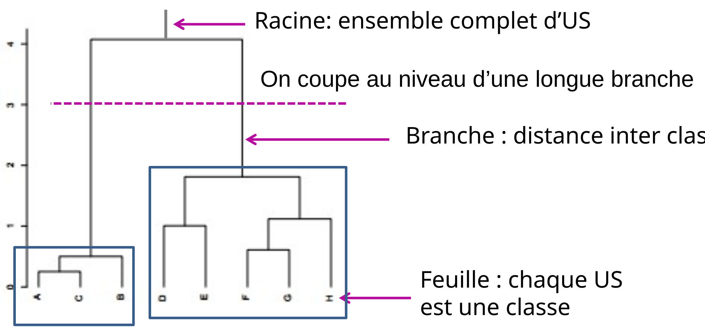
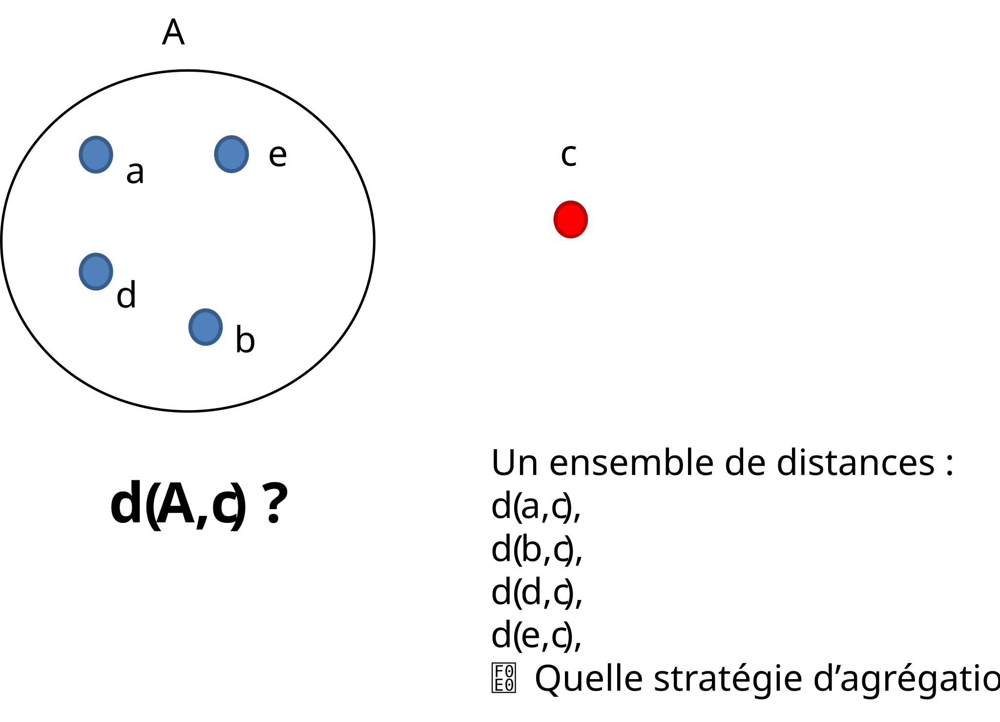
On regroupe les classes en minimisant l'indice d'agrégation.
Soit A et B deux classes ou 2 US d'une partition donnée :
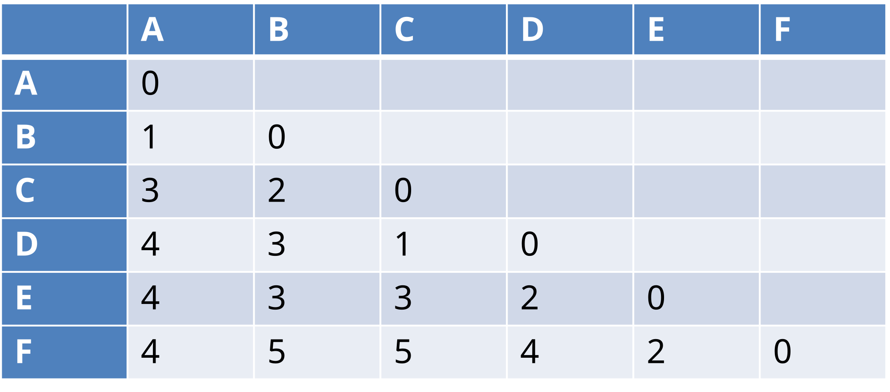
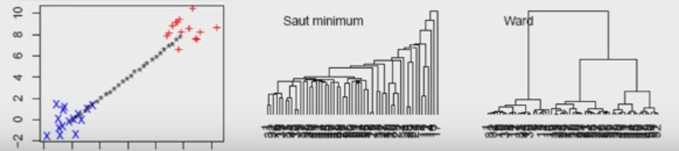
from sklearn.datasets import load_iris
from scipy.cluster.hierarchy import dendrogram, linkage
from matplotlib import pyplot as plt
iris = load_iris()
Z = linkage(iris.data, 'ward')
plt.figure(figsize=(18, 8))
dn = dendrogram(Z)
plt.show()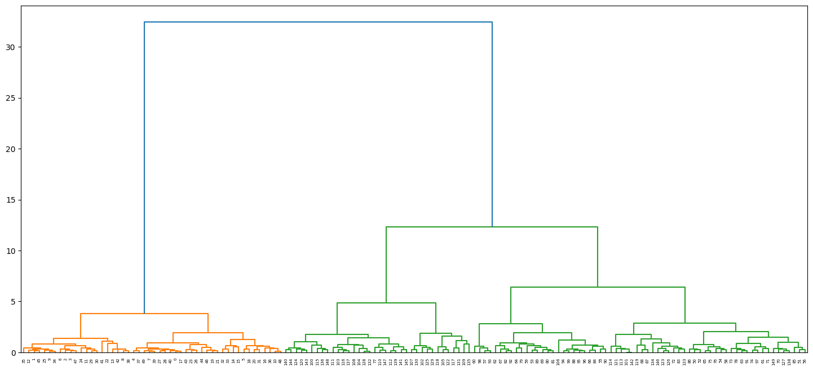
from sklearn.datasets import load_iris
from sklearn.cluster import AgglomerativeClustering
iris = load_iris()
model = AgglomerativeClustering(n_clusters=3)
labels = model.fit_predict(iris.data)
plt.scatter(iris.data[:,0], iris.data[:,2], c=labels)
plt.xlabel(iris.feature_names[0])
plt.ylabel(iris.feature_names[2])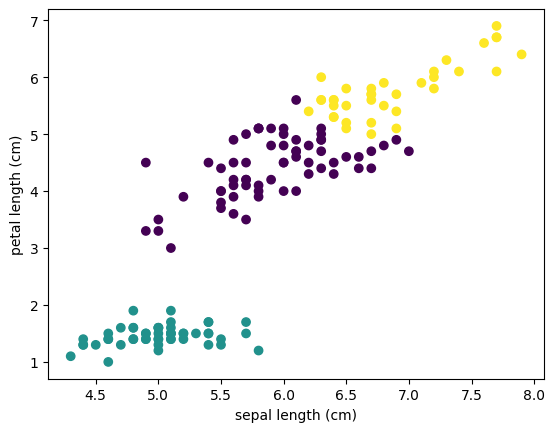
CAH : forte dispersion géographique des classes obtenues.
CAH avec contraintes de proximité spatiale : introduction de l'information spatiale dans la classification
L'algorithme HClustGeo permet de prendre en compte l'information géographique :
$d(A, B) = \alpha d_1(A, B) + (1 - \alpha) d_2(A, B)$
Le choix du paramètre $\alpha$ est très important :
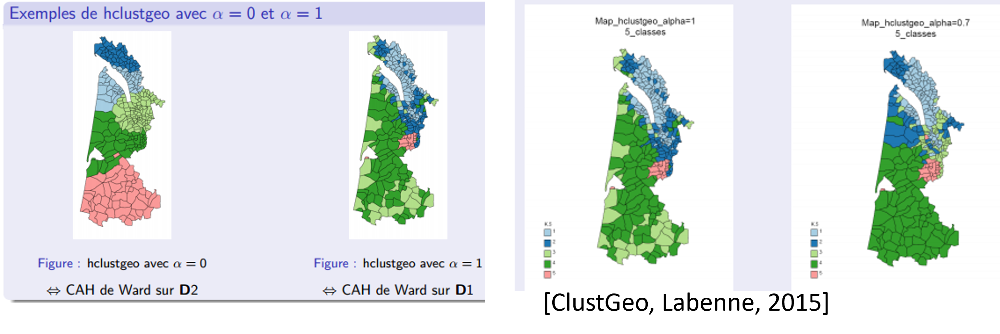
Classification par partition : construit une partition en K classes à partir de l'ensemble des US
Principe :
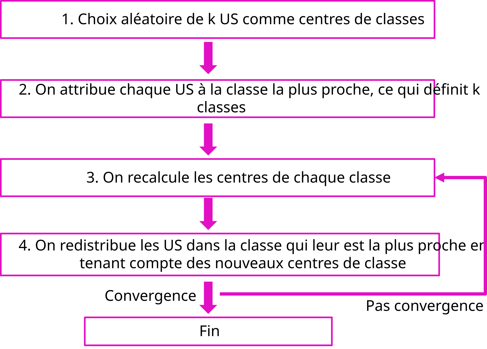
from sklearn.datasets import load_iris
from sklearn.cluster import KMeans
iris = load_iris()
k_means = KMeans(n_clusters=3)
labels = k_means.fit_predict(iris.data)
plt.scatter(iris.data[:,0], iris.data[:,2], c=labels)
plt.xlabel(iris.feature_names[0])
plt.ylabel(iris.feature_names[2])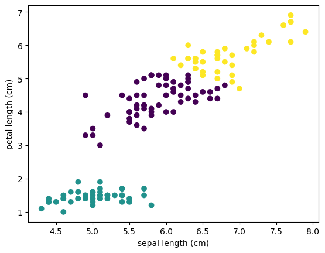
Avantages
Inconvénients
Avantages
Inconvénients
Deux paramètres :
initialisation
Parcours des points
Formation de cluster
Expansion du cluster
Réitération
Résultat final
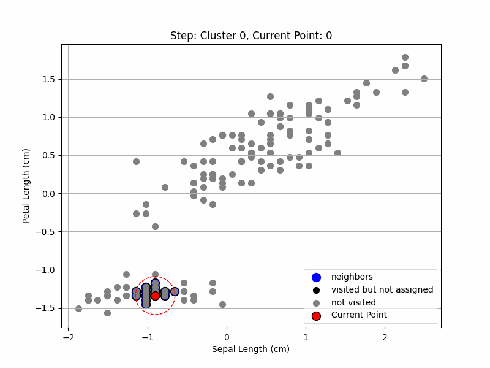
Certains algorithmes sont plus ou moins adaptés à certaines formes de groupe $\rightarrow$ Regarder la forme des groupes sur le nuage de points des deux premières composantes de l'ACP.
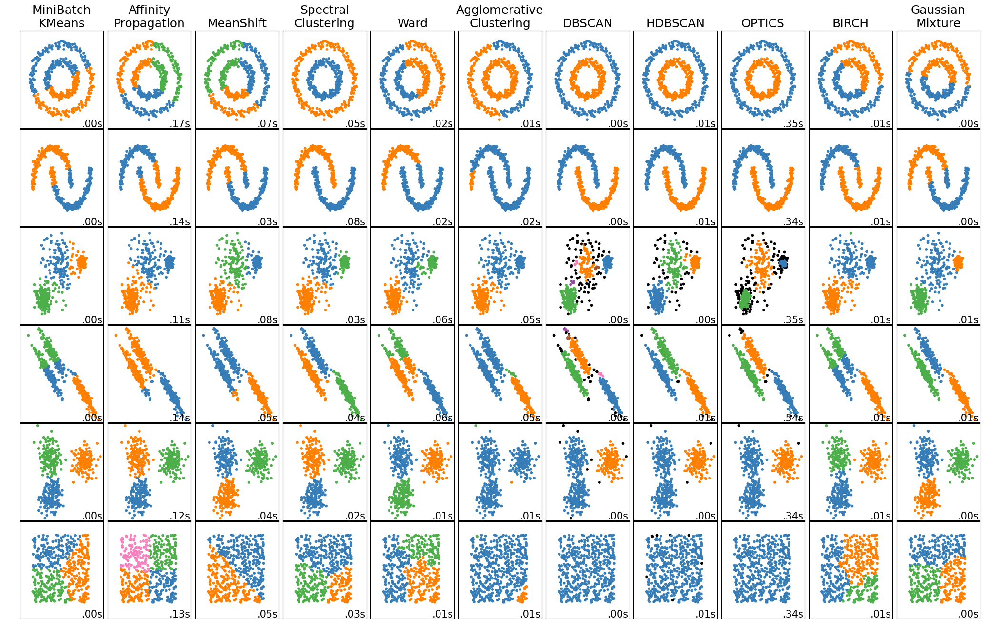
[scikit-learn documentation]
On veut classifier des données en K classes connues, pour lesquelles on dispose d'exemples.
Un algorithme d'apprentissage automatique est entrainé sur ces exemples, puis est utilisé pour inférer la classe des individus.
Attention à l'autocorrélation spatiale ! [Karasiak 2022]
Matrice de confusion $M_{i,j}$ = nombre d'individus de la classe i prédits dans la classe j
Métriques par classe :
Métriques globales :
Rappel moyen $PA = \frac{1}{n}\sum_{i=1}^{n}{PA_i}$, Precision moyenne, F-1 score moyen, Exactitude (Overall accuracy) $OA = \frac{\sum_{i} M_{i,i}}{N}$...
| Classe réelle ↓ / prédite → | A | B | C |
|---|---|---|---|
| A | 95 | 0 | 5 |
| B | 3 | 30 | 17 |
| C | 2 | 4 | 44 |
Sur un total de N = 200 échantillons.
Métriques globales :
Les algorithmes de classification supervisée se divisent en plusieurs familles basées sur des approches distinctes :
Modèle de classification qui repose sur la séparation progressive des données à l'aide de seuils.
Avantages
Inconvénients
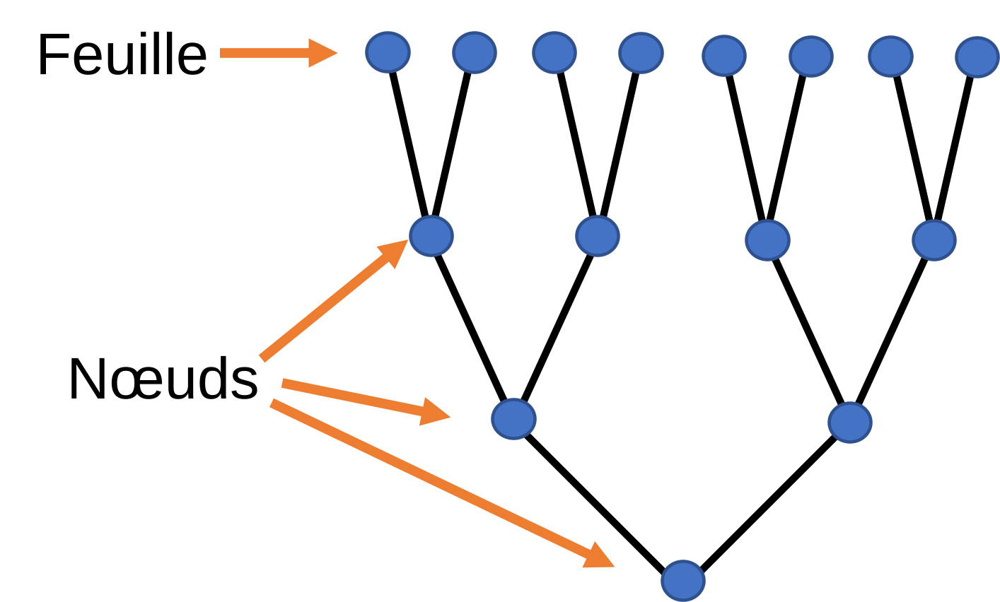
Au court de l'entrainement :
Pour l'inférence d'un individu :
| Longueur des pétales | Largeur des pétales | Espèce |
|---|---|---|
| 1.4 | 0.2 | Setosa |
| 4.7 | 1.4 | Versicolor |
| 5.1 | 1.8 | Versicolor |
| 1.5 | 0.1 | Setosa |
| 4.9 | 1.5 | Versicolor |
| 5.8 | 2.2 | Virginica |
L'indice de Gini mesure l'impureté d'un nœud. Il est défini par :
$Gini = \sum_{i=1}^{C} p_i(1 - p_i) = 1 - \sum_{i=1}^{C} p_i^2$
Exemple : on sépare le jeu de données en fonction de la longueur du pétale < 1.6:
| Longueur des pétales | Largeur des pétales | Espèce |
|---|---|---|
| 1.4 | 0.2 | Setosa |
| 4.7 | 1.4 | Versicolor |
| 5.1 | 1.8 | Versicolor |
| 1.5 | 0.1 | Setosa |
| 4.9 | 1.5 | Versicolor |
| 5.8 | 2.2 | Virginica |
Calcul du Gini pour le nœud gauche :
$Gini = 1 - (2/2)^2 = 0 \rightarrow$ Ce nœud est pur !
Calcul du Gini pour le nœud droit :
$Gini = 1 - (3/4)^2 - (1/4)^2 = 0.375$
Le Gini total pour cette division est la moyenne pondérée des deux nœuds =0.25.
Parmi toutes les divisions possibles, l'arbre de décision choisit celle qui minimise l'indice de Gini.
Dans cet exemple, si la division par la longueur du pétale minimise le Gini, alors l'arbre utilisera cette caractéristique pour créer un nœud de décision.
Itération : Le processus se répète jusqu'à ce qu'un critère d'arrêt soit atteint (profondeur maximale, impureté minimale, etc.).
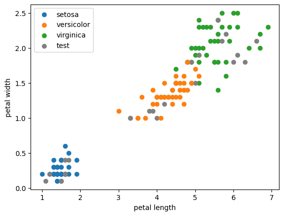
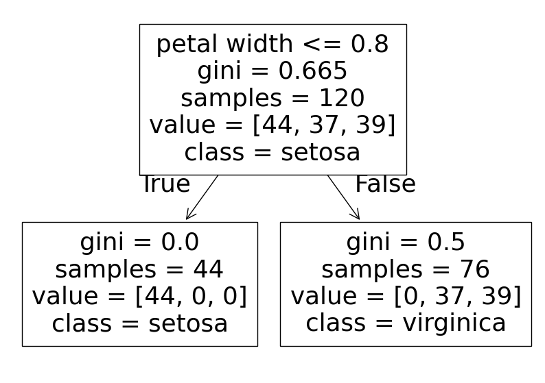
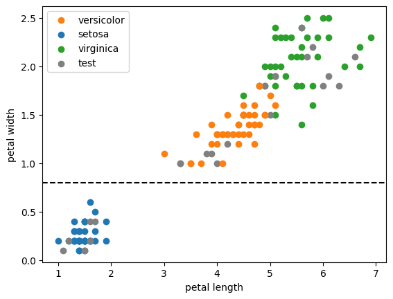
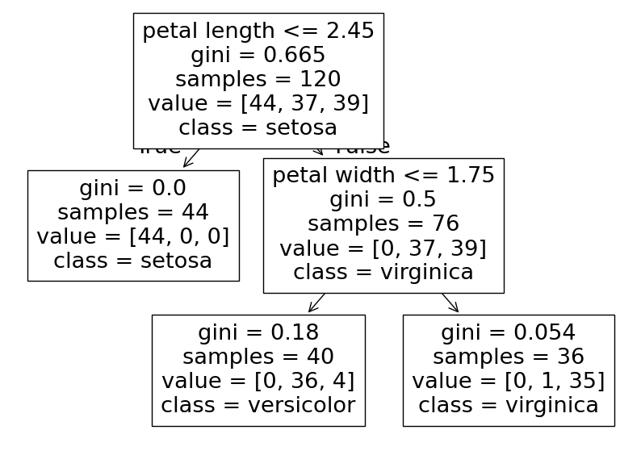
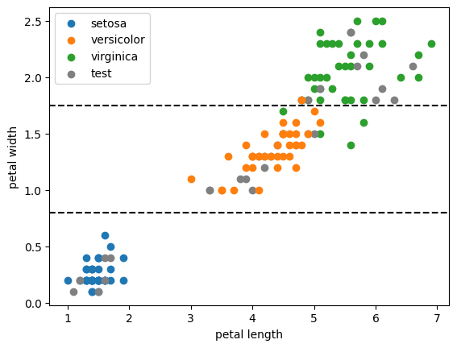
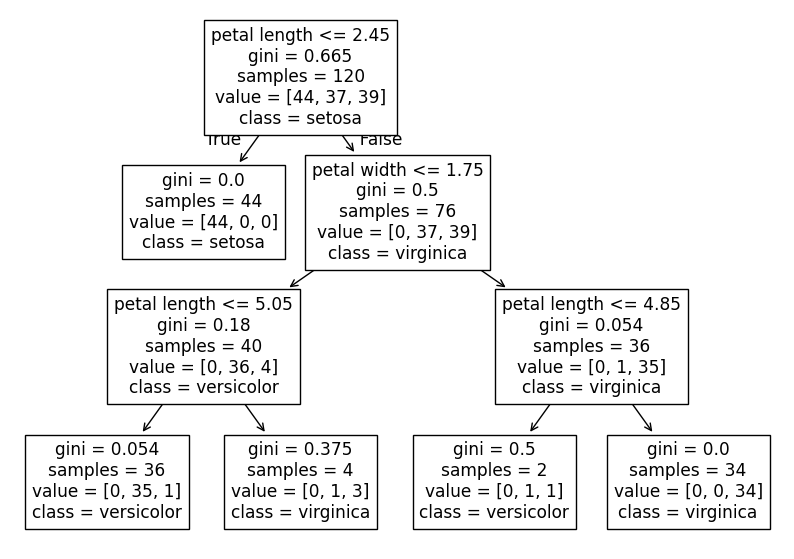
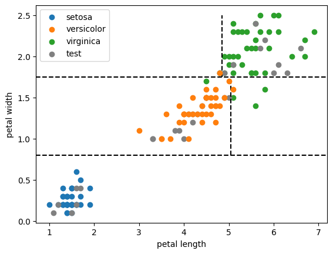
Random Forest est un modèle d'ensemble d'arbres de décision qui utilise le bagging pour améliorer la précision.
Caractéristiques principales :
Avantages : Résistant au bruit, flexible, et performant pour des problèmes non linéaires.
Etapes :
Chaque arbre est ainsi légèrement différent, ce qui réduit la corrélation entre eux et augmente la robustesse globale du modèle.
from sklearn.datasets import load_iris
from sklearn.ensemble import RandomForestClassifier
from sklearn.metrics import classification_report
from sklearn.model_selection import train_test_split
iris = load_iris()#Load the dataset
clf = RandomForestClassifier()#construct the classifier
X_train, X_test, y_train, y_test = train_test_split(
iris.data, iris.target,
train_size=0.5)
clf.fit(X_train, y_train)#train the classifier
y_pred = clf.predict(X_test)
print(classification_report(y_test, y_pred)) precision recall f1-score support
setosa 1.00 1.00 1.00 27
versicolor 0.96 0.96 0.96 27
virginica 0.95 0.95 0.95 21
accuracy 0.97 75
macro avg 0.97 0.97 0.97 75
weighted avg 0.97 0.97 0.97 75